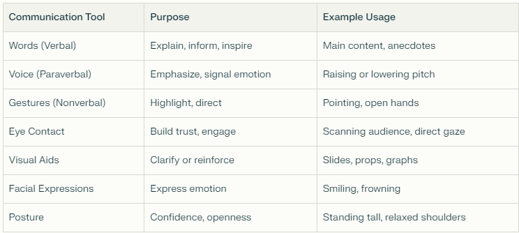
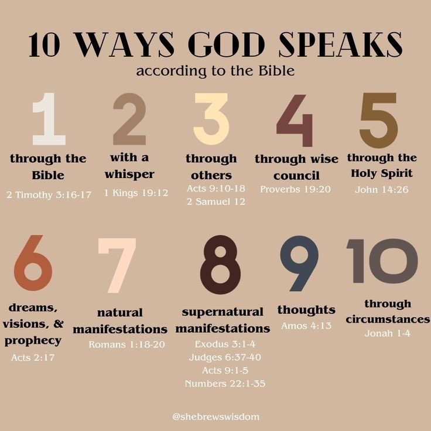
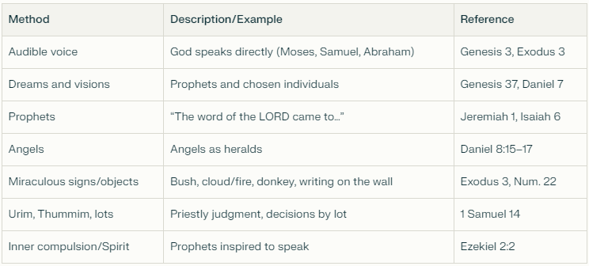
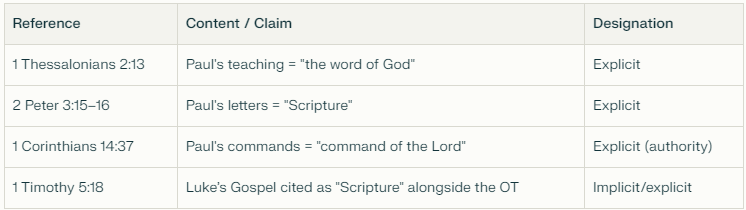
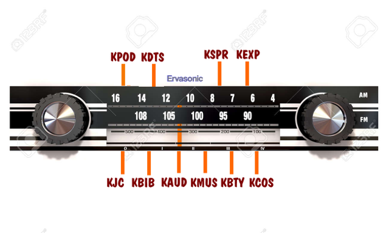
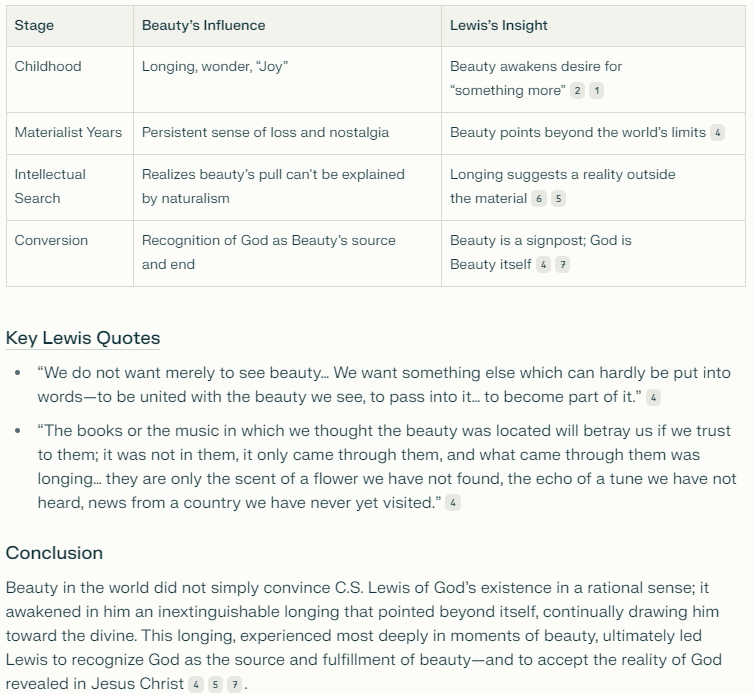
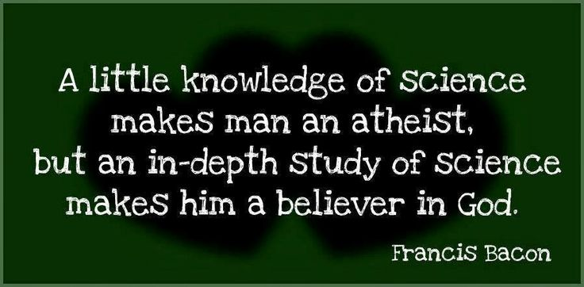

Good morning. Here's an email I mentioned to the group last night — a bit of a unique way that I've come to hear from God. Tell me what you think. Am I being heretical?
What's also interesting to me is how this overlaps with our shared struggle to get closer to each other through communication. Not all communication happens through words — voice, gestures, eye contact, posture, facial expression all carry meaning too, and text alone strips most of that away. It seems fitting to me that the same principle applies with God: if I only allow Him to communicate through His written Word, I'm limiting Him considerably, and by limiting Him I can't be as close, connected, or intimate with Him as either of us desires.
So, if my new theology holds water, I owe it all to you all.
I have lots of stuff I want to share as I get ready for Exile & Return, but first, as always, a few introductory remarks. I'd love your thoughts on God's Word.
I've loved God's Word from day one of my salvation. The verse that best sums this up is:
“Your words were found, and I ate them, and Your words became a joy to me and the delight of my heart; for I have been called by Your name, Lord God of armies.” — Jeremiah 15:16
For about 20 years I wouldn't allow anything to hold a higher authority in my life than our Holy Bible. But was I correct? Is the Bible the only way God speaks to us? I think we'd all give an emphatic “no” to that. But is it the final authority for how God speaks to us? I think we'd all say yes.
So first, what is a word? Words are tools of communication — though not the only tool. They represent concepts, objects, actions, and feelings relating to a person, place, or thing. They let us share experiences, thoughts, needs, and ideas about a person, place, or thing. They create shared understanding and enable cooperation, teaching, storytelling, and reasoning. Philosophically, Ludwig Wittgenstein described words as “signs with meaning” used in language-games — practices of life that coordinate our actions and thoughts.
In our everyday life, are words the only way we communicate with people? Hardly — tone of voice, gestures, eye contact, visual aids, facial expressions, and posture all carry their own weight in getting a message across, sometimes more than the words themselves:

Which brings me to Hebrews 1:1–2:
“Long ago God spoke many times and in many ways to our ancestors through the prophets. And now in these final days, he has spoken to us through his Son. God promised everything to the Son as an inheritance, and through the Son he created the universe.” — Hebrews 1:1–2
So what, then, is God's Word? Simply Him communicating with us, revealing Himself to us in any manner. We can only know Him in the ways He chooses to communicate with us, and there are at least ten ways we know of:

Here's a more detailed breakdown with the actual references behind several of those methods:

Consider this: in the Old Testament, the phrase “the word of the LORD came to me” is used well over 100 times, across at least 16 books — and Amos 3:7 tells us why He does it that way. In the New Testament, the authors themselves state that their words are also God's Word:

And Jesus Himself is called The Word — who, or what, could ever communicate God to us beyond Jesus?
Now here's what I want to add to all of this. Picture an old car radio dial, and think of it as a way of tuning in to how God speaks:

AM = Abridged Method
- KPOD = a Christian podcast developed solely from Scripture
- KDTS = Dallas Theological Seminary lectures
- KSPR = Charles Spurgeon's 3,000+ sermons
- KEXP = expository preaching, at your church or anywhere else — see John Stott's The Paradoxes of Preaching
FM = Focused Method
- KJC = Jesus Christ. Normally found in the Gospels — but if He calls you on the phone, listen to Him.
- KBIB = Our Holy Bible, written. The inspired, inerrant Word of God — 66 books, 40 authors from various backgrounds, over a 1,500-year history, corroborated by physical and natural science at every level. It has withstood the test of time, with unequalled manuscript evidence allowing for accurate hermeneutics. The #1 book of all time in publication, ownership, and access.
- KAUD = Our Holy Bible, spoken. He who has ears to hear, let him hear.
- KMUS = Nearly all Christian music is about communicating to our hearts who God is and how we should respond — all based on Scripture. Did you know the entire book of Psalms has been set to music?
- KBTY = Beauty. Doesn't the incredible beauty we see in the world communicate a beautiful God? My response to beauty is instant worship. Always. C.S. Lewis walked this exact road — beauty was what finally cracked open his materialism:

- KCOS = Creation — math, physics, cosmology. Doesn't the incredible complexity and vastness of our universe communicate a powerful, intelligent, infinite Creator, where worship is the only appropriate response? Here's a video that gets at it. Francis Bacon put it best, long before any of us:

Conclusion. To sum all this up I'm reminded of 1 Peter 3:15:
“But sanctify the Lord God in your hearts, always being ready to make a defense to everyone who asks you to give an account for the hope that is in you, but with gentleness and respect.” — 1 Peter 3:15
What's hit me is a new angle on “sanctify the Lord God in your hearts.” In context, Peter is saying we have to get our hearts and motives right before giving an account for the hope within us. But I see something similar in how I receive from God. I see “sanctify the Lord God in our hearts” as dialing in the frequency of our hearts — which is what allows us to actually hear Him across all these different stations.
This email is already too long, so I'll stop here for now, but I'll come back to it. In the meantime, feel free to email me with your own thoughts. — Erv
Comments